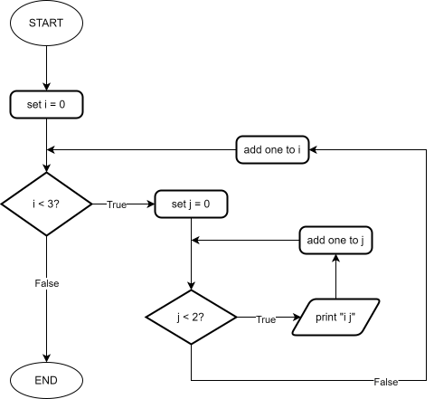

Definite Loops: We know how many times the loop should run.
Indefinite Loops: We don't know how many times the loop should run.
Any definite loop can be written as an indefinite loop, so we will focus on indefinite loops.
Python
while some_condition == True:
## do some work
Example:
## Print numbers 1-4
i = 1
while i <= 4:
print( i )
## Increment the loop control variable
## If we forget this, the loop will run forever (infinite loop)
i += 1
Do in class: flowchart for the above code.
Demo:
i, j, k,
etc for the loop control variable, but it's a convention in many
languages.
## Prints 0, 2, 4, 6, 8
i = 0
while i < 10:
print( i )
i = i + 2
## Prints 10, 9, 8, ..., 1
i = 10
while i > 0:
print( i )
i = i - 1
## Prints 1-9, not 1-10
i = 1
while i < 10:
print( i )
i += 1
## Nested while loop
# OUTER LOOP
i = 0
while i < 3:
# INNER LOOP
j = 0
while j < 2:
print( i, j )
j += 1
i += 1
# OUTPUT: 0 0, 0 1, 1 0, 1 1, 2 0, 2 1
Flowchart for the above:

A sentinel value is a special value that signals the end of a loop.
A main use case is to allow the user to enter data until they are done...
## Sentinal value
name = ""
while name != "quit":
name = input( "Enter a name or 'quit' to exit: " )
## A real program might do some work here, like add to a database...
print( name )
Note the problem with the above code snippet... the word "quit" is printed out at the end. Let's fix it.
## Sentinal value with priming read
name = input( "Enter a name or 'quit' to exit: " )
while name != "quit":
print( name )
## We check our loop exit condition again at the end of the loop
name = input( "Enter a name or 'quit' to exit: " )
Examples: